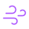
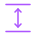
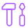

PX-FТУ 20.30.12-104-73815750-2024
ПИРОФЛЕКС ®-ФИНИШ
Двухкомпонентная акрил-уретановая эмаль для финишной защиты и отделки
Защитно-декоративный слой для металла, бетона и железобетона. Цвет выбирается по каталогу RAL.

C5
коррозионная стойкость≥25 лет
срок службыдо 9
баллов при высоте до 70 мRAL
цветовая гамма
≤6 чДля металла, бетона и инфраструктурных объектов
Антикоррозионная защита металла, железобетона и бетона: мосты, опоры линий электропередачи, резервуары и цистерны, промышленное оборудование, металлоконструкции, бетон, наружные трубопроводы и оголовки свай. Для промышленной атмосферы умеренного и холодного климата.
- Металлоконструкции и оборудование
- Наружные трубопроводы
- Мосты, опоры и резервуары
- Бетон и железобетон

Защита и декоративная отделка
ФИНИШ защищает подготовленную поверхность и задаёт цвет и блеск по проекту.
- Адгезия и долговечностьАдгезия и долговечность.
- Коррозионная стойкость C5Коррозионная стойкость C5.
- Выбор цвета и блескаДекоративные варианты цвета и блеска.
- Срок службы до 25 летСрок службы до 25 лет.
- СейсмостойкостьСейсмостойкость до 9 баллов.
Срок службы — не менее 25 лет по каталогу.
Акрил-уретановая эмаль
Двухкомпонентная эмаль — суспензия пигментов и наполнителей в синтетическом плёнкообразователе с органическими растворителями и добавками. Полуглянцевая или глянцевая; цвет по каталогу RAL.

Технические характеристики| Параметр | Значение по каталогу |
|---|---|
| Нелетучие вещества | ≥60% |
| Адгезия | класс ≤1 |
| Высыхание до степени 3 | ≤6 ч |
| Коррозионная стойкость | C5 |
| Сейсмика | до 9 баллов при высоте до 70 м |
| Срок службы | ≥25 лет |
Документы — ПИРОФЛЕКС ®-ФИНИШ
В официальной папке есть свидетельство о государственной регистрации, экспертное заключение, ТУ и паспорт безопасности. Полный перечень см. в реестре. Каталог не указывает отдельные стандарты для карточки.
Официальный документСвидетельство о государственной регистрации Эмаль ПИРОФЛЕКС ®-ФИНИШ
Открыть PDF
Официальный документ20.30.12-104-73815750-2024 ПИРОФЛЕКС ®-ФИНИШ
Открыть PDF
Официальный документЭЗ ФИНИШ № 8006 от 14.07.2026
Открыть PDF
Паспорт безопасностиПАСПОРТ БЕЗОПАСНОСТИ ПИРОФЛЕКС ®-ФИНИШ
Открыть PDF
Технические характеристикиГРУНТ-ЭМАЛЬ ПИРОФЛЕКС ®-ФИНИШ тех. характеристики
Открыть PDF
В переданном комплекте отдельный файл сертификата для этого материала не обнаружен. Нормативные ссылки в каталоге приведены отдельно от списка доступных файлов.
Опорный расход ПИРОФЛЕКС ®-ФИНИШ
Сводный PDF указывает 135 г/м² при сухой толщине 50 мкм. Отдельной полной таблицы расходов ФИНИША среди переданных материалов не обнаружено.
Сводный документ указывает 135 г/м² при толщине сухого слоя 50 мкм. Полная отдельная таблица расхода ФИНИША в переданном комплекте не обнаружена.
Подготовка и условия работ
Подготовьте компоненты A и B, соблюдайте жизнеспособность смеси и требования к подготовке поверхности.
- Смешать компоненты A и B по массе в соотношении 10020.
- Перемешивать низкооборотной дрелью до однородностивыдержать 5–10 минут.
- Жизнеспособность смеси — 3 часа при +20 ± 2 °CЖизнеспособность смеси — 3 часа при +20 ± 2 °C.

Этап 4Подготовить поверхность абразивоструйной очисткой до степени 1/2 по ГОСТ 9.402.- Условия нанесения+5…+40 °C, относительная влажность ≤85%.
- Нанесение распылением, наливом, погружением или кистьюИспользовать СИЗ; оборудование промыть после работы.
Условия хранения
−35…+35 °C, вдали от огня, солнечного света и влаги. Срок хранения 18 месяцев.
−35…+35 °C18 месяцев
Хранение и перевозкаХранить вдали от огня, прямого солнечного света и влаги.
18 месяцевУсловия и срок проверяйте по документам конкретного материала и маркировке партии.
Не допускайте применения материала с нарушенной упаковкой или истёкшим сроком хранения.
Сопутствующие материалы
Выбирайте совместимые материалы по проектному решению и условиям эксплуатации.
Подбор для конкретного объекта